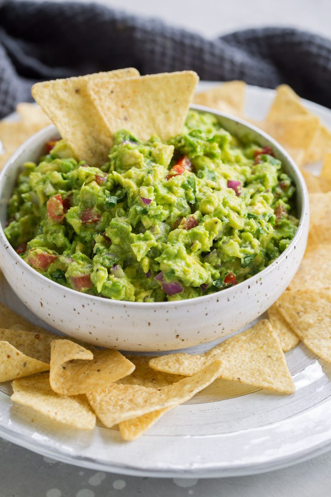

Homemade Guacamole
Homemade Guacamole

Ingredients
- Avocados-good guacamole starts with good avocados so use the best you can find. Hass are best, most likely you'll be getting Hass if in the US, they make up 95% of what's sold.
- Roma tomato-this adds little bits of sweet tomato-y flavor that pairs perfect with the avocado and lime.
- Red onion- a little goes a long way, and don't forget to rinse to remove the harsh bite first.
- Jalapeno- this adds nice spicy kick. You could try it with another type of pepper such as Serrano (they're spicier) or in a pinch use some cayenne.
- Cilantro- you won't always find cilantro in guacamole but it really adds such a great background flavor.
- Garlic- use fresh garlic not bottled.
- Salt and Pepper- as always, this brings out the flavors and keeps it from tasting one dimensional.
- Lime- if you don't have lime you could substitute lemon in a pinch.
Instructions
- Add avocados to a larger bowl and cut into avocados with a pastry cutter or fork until you've reached the texture you like.
- Add red onion, tomato, cilantro, jalapeno, garlic, lime and season with salt and pepper to taste.
- Toss mixture then serve immediately for best results.